Hola que tal,este es mi primer trabajo web:V
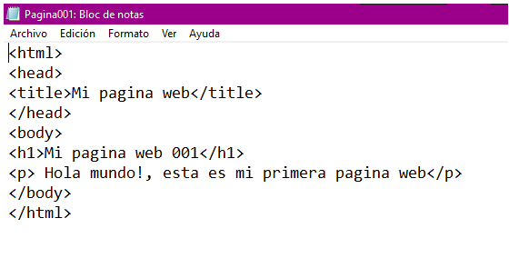 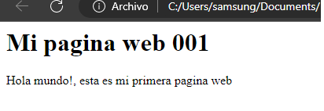Este es mi segunda pagina web,la 002,aqui conocimos sobre el HTML
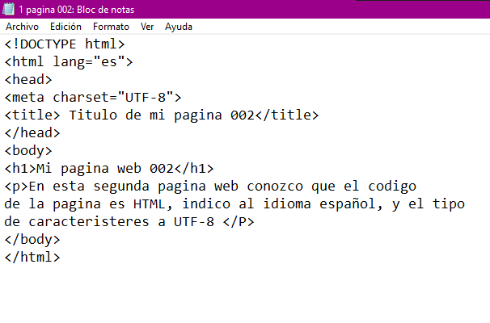 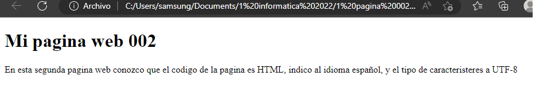Esta es la pagina 003,en donde aprendimos sobre los conceptos basicos del HTML
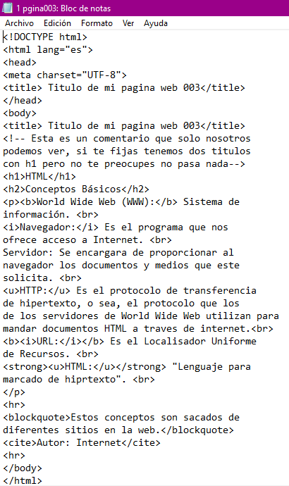 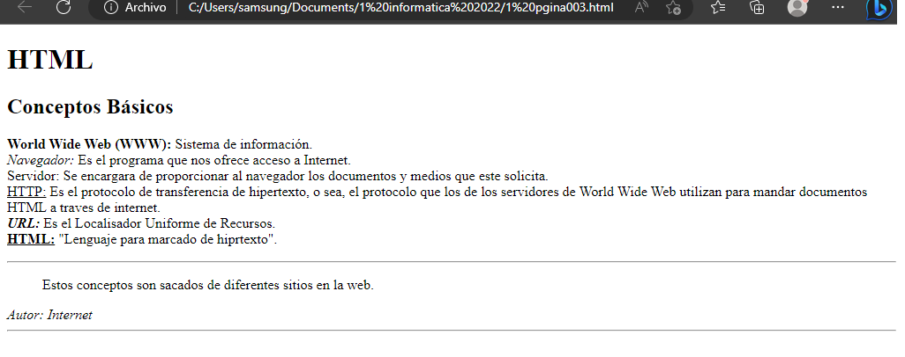Esta fue la pagina 004,nos dejaron escribir lo que queramos
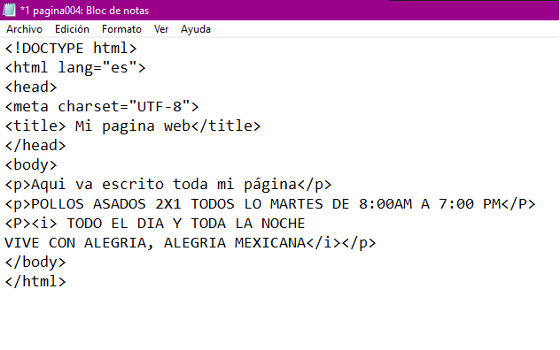 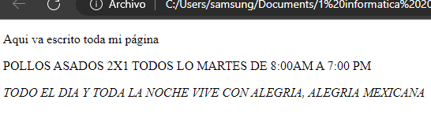Aqui esta un cuadro matematico,con algunas formulas:)
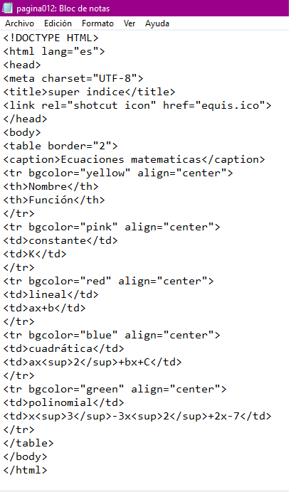 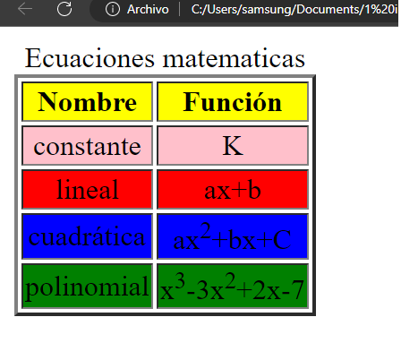Esta es una tabla con los colores que se pueden poner en la computadora uwu
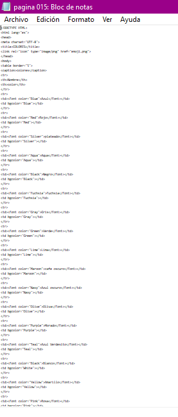 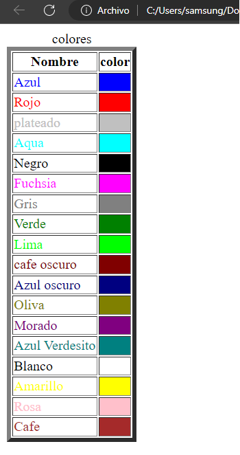Aqui aprendimos a poner imagenes como un TOM
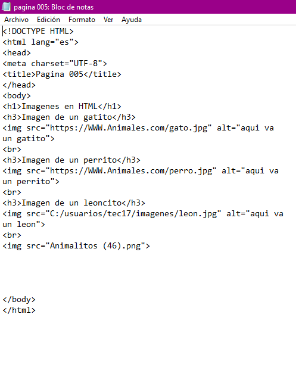 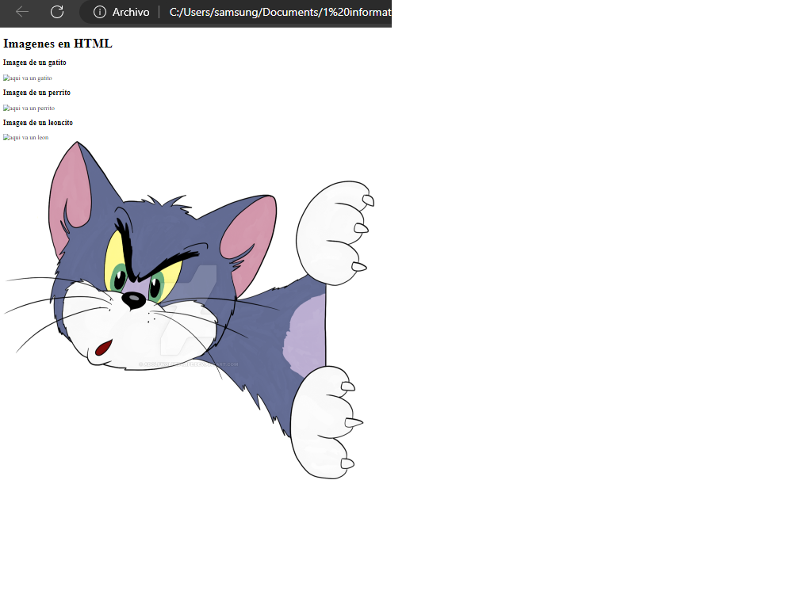Esta es una tabla sobre las festividades del año
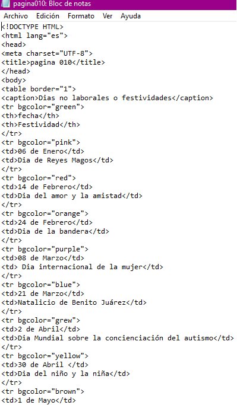 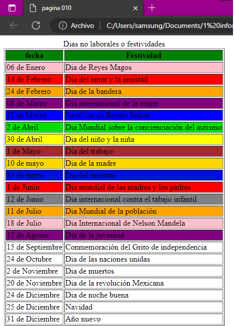Estas son las lineas de codigo de las palabras en HTML:V
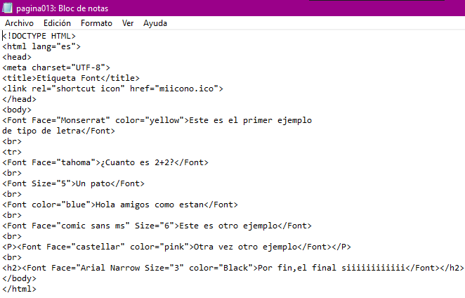 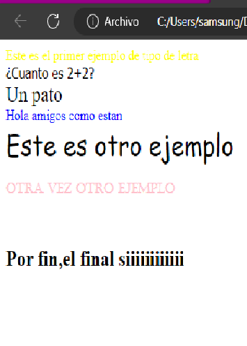Esta es una tabla con los elementos
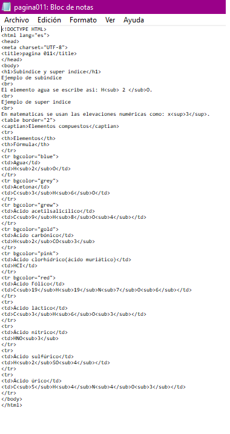 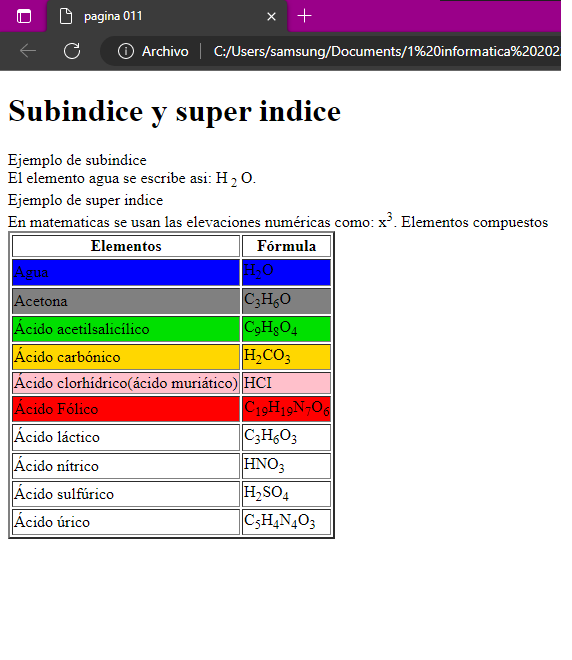Y estos son algunos de los trabajos del cuaderno:)
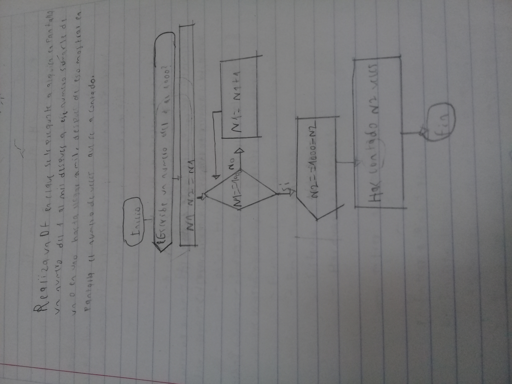 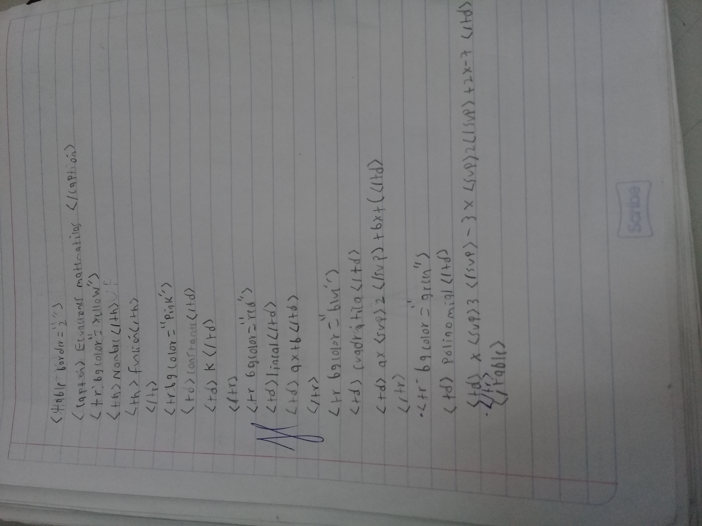 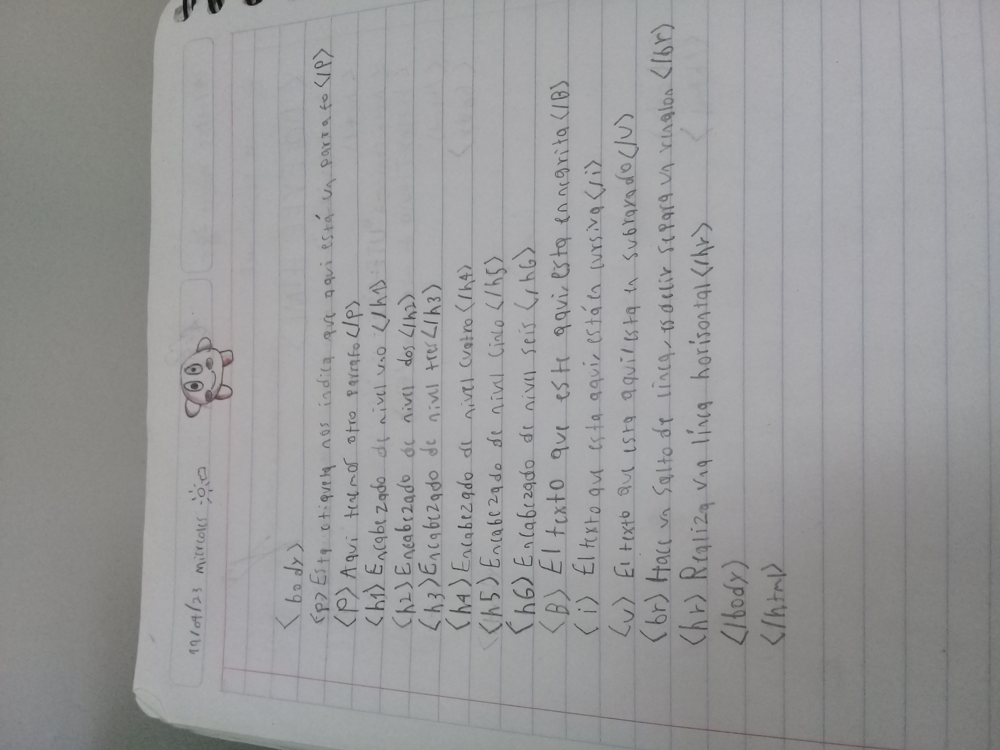 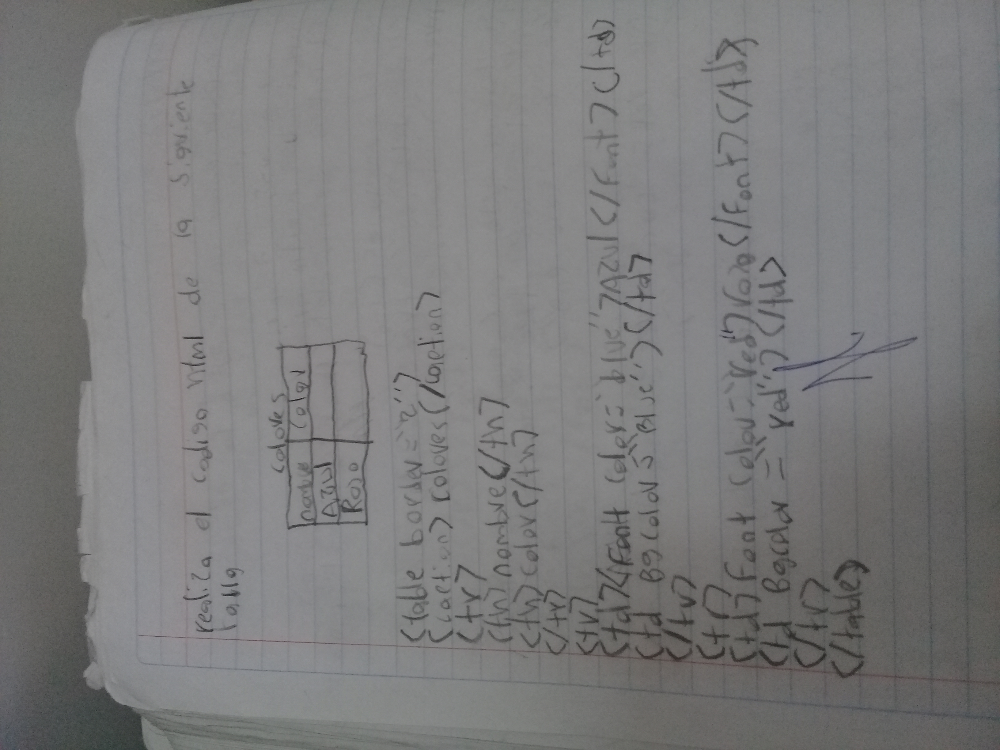